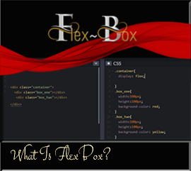
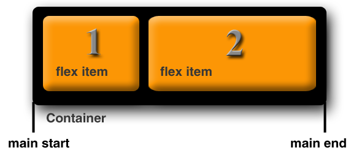
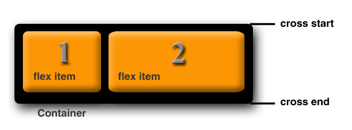

~1 What is Flex Box? ~
1/22/2024

What is Flexbox?
Flexbox was introduced in October of 2017. It is the latest and greatest way of positioning things on a web page. It makes things easier to layout and it is completely responsive.
With flexbox you start out with a container in your layout and then you can position everything within it.
Flexbox layout works very well for small-scale layouts, but a grid layout may work better for larger scale layouts.
A little of the basics and terminology
Flexbox comes with a whole slew of properties straight out of the box and ready to be used. Some of these are intended to be used on the container, where your layout objects will reside, and some of them will go on the smaller child elements inside of the container.
First, we might need to visualize exactly what we are working with, when our program is deciphering this Flexbox object.
Items can be laid out in two different ways. It can follow the main axis (from main-start to main-end)

…OR, the Cross axis (from cross-start to cross-end)

main axis- The main axis of the flex container is the primary axis, where the flex items are laid out. But beware, it is not always horizontal. The main axis will depend on the flex-direction property.
main-start | main-end – The flex items are put into the container starting from main-start and going to main-end.
main size- A flex item’s width or height, whichever is in the main dimension, is the item’s main size.
cross axis- The axis perpendicular to the main axis is called the cross axis. Its direction depends on the main axis direction. The main axis in our example goes horizontal, when you want something to be perpendicular it will form a cross. So, in our case the cross axis will be vertical. You will see that the two lines together will form a cross.
cross-start | cross-end – Flex lines are filled with items and placed into the container starting on the cross-start side of the flex container and going toward the cross-end side.
cross size – The width or height of a flex item, whichever is in the cross dimension, is the item’s cross size. The cross size property is whichever of ‘width’ or ‘height’ that is in the cross dimension.